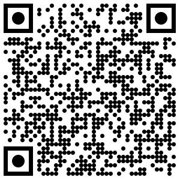

KI erklärt, gibt Rückmeldung oder eröffnet einen neuen Zugang zum Lernen.
Werte und Normen · Klasse 10
KI in der Schule
Hilfe, Abkürzung oder Täuschung? Wir entwickeln Regeln, die Lernen ermöglichen und Verantwortung sichtbar machen.
KI
Einstieg
Drei Fälle. Wo steht eure Ampel?
- Du lässt dir einen schwierigen Text in leichter Sprache erklären.
- Du übernimmst eine KI-Zusammenfassung und prüfst die genannten Quellen nicht.
- Du gibst einen KI-Text als eigene Hausaufgabe ab.

Abstimmen und begründen
Der Konflikt
Dasselbe Werkzeug kann helfen, täuschen oder schaden
KI übernimmt Denkarbeit. Das Ergebnis wirkt gut, aber das eigene Können bleibt unsichtbar.
Falsche Inhalte, private Daten oder verschleierte Nutzung treffen andere und untergraben Vertrauen.
Unser Maßstab
Ein gutes Urteil braucht fünf Prüfsteine
- FairnessHaben alle eine vergleichbare Chance?
- LernenVerstehe ich danach mehr oder gebe ich Denken ab?
- WahrheitKann ich Aussagen und Quellen nachvollziehen?
- TransparenzIst erkennbar, wie KI beteiligt war?
- VerantwortungWer trägt die Folgen, wenn etwas falsch oder unfair ist?
Der Weg zum Kodex
Aus Streitfällen werden begründete Regeln
Ihr prüft einen Konflikt aus eurer Perspektive und mit belastbaren Quellen.
Ihr ordnet konkrete Fälle ein und begründet eure Grenze.
Die Klasse verbindet die stärksten Argumente zu einem gemeinsamen Kodex.
Fünf Teams · eine gemeinsame Frage
Jede Gruppe prüft eine andere Grenze
- Fairness und Eigenleistung
- Verantwortung und Wahrheit
- Bewertung von Leistungen
- Neue Prüfungsformen
- Lernen und Abhängigkeit
Recherche
Belege schlagen Bauchgefühl
Fragt bei jeder Quelle: Wer sagt das, worauf stützt sich die Aussage und was folgt daraus für unseren Fall?
- Kultusministerkonferenz Kritisch-konstruktiver Umgang mit KI in schulischen Bildungsprozessen PDF öffnen
- Bildungsportal Niedersachsen Textgenerierende KI, schulischer Kontext und Datenschutz Seite öffnen
- Datenschutzkonferenz Orientierung zu KI und zum verantwortbaren Umgang mit Daten PDF öffnen
Quellenstand: Juli 2026 · Ergänzt eigene Beispiele aus Schule und Alltag.
Team 01 · Fairness und Eigenleistung
Wann wird Hilfe zum unfairen Vorteil?
Woran erkennt man noch eure eigene Leistung, wenn KI beteiligt war?
- Sammelt drei reale Fälle aus Hausaufgaben, Referaten oder Lernaufgaben.
- Prüft jeden Fall mit den fünf Prüfsteinen.
- Formuliert die stärkste Gegenposition zu eurem Urteil.
Euer Ergebnis
Eine Ampel mit drei Fällen und eine Regel, die fairen KI-Einsatz erkennbar macht.
Team 02 · Verantwortung und Wahrheit
Wer prüft, wenn KI überzeugend falsch liegt?
Was müsst ihr kontrollieren, bevor ihr eine KI-Antwort verwendet?
- Untersucht Beispiele mit Fakten, Quellen oder Erklärungen.
- Entwickelt eine kurze Prüfroutine für zweifelhafte Antworten.
- Klärt: Wer trägt die Verantwortung für das Endergebnis?
Euer Ergebnis
Eine Prüfroutine und eine Regel gegen ungeprüfte oder erfundene Aussagen.
Team 03 · Bewertung von Leistungen
Welche Note ist trotz KI noch gerecht?
Was muss eine Lehrkraft sehen, damit eine Bewertung eure Leistung trifft?
- Vergleicht erlaubte Hilfe, offenzulegende Hilfe und Täuschung.
- Prüft, ob dieselbe Regel für alle fair wäre.
- Legt fest, wie KI-Nutzung dokumentiert werden sollte.
Euer Ergebnis
Drei transparente Bewertungsbedingungen und ein strittiger Grenzfall.
Team 04 · Neue Prüfungsformen
Wie wird Verstehen wieder sichtbar?
Welche Aufgaben zeigen Denken, Entscheiden und Begründen statt nur ein fertiges Produkt?
- Sammelt Prüfungsformen aus eurem Unterricht und neue Ideen.
- Prüft, wo KI Lernen unterstützt und wo sie die Leistung verdeckt.
- Entwerft eine Aufgabe, bei der der Arbeitsweg sichtbar bleibt.
Euer Ergebnis
Ein Prüfungsformat mit klarer KI-Regel und nachvollziehbarer Eigenleistung.
Team 05 · Lernen und Abhängigkeit
Wann stärkt KI euch — wann schwächt sie euch?
Woran merkt ihr, ob KI Selbstständigkeit fördert oder Denken ersetzt?
- Sammelt Beispiele aus Schule, Alltag und Berufsvorstellungen.
- Vergleicht kurzfristige Bequemlichkeit mit langfristigem Lernen.
- Berücksichtigt unterschiedliche Zugänge und Vorkenntnisse.
Euer Ergebnis
Eine Lernregel mit Warnzeichen für Abhängigkeit und einem sinnvollen Einsatzbeispiel.
Präsentation · maximal 8 Minuten
Zeigt den Streit — nicht eure ganze Recherche
Ein Fall
Woran entzündet sich euer Konflikt?
Zwei Seiten
Was spricht für und gegen die Nutzung?
Euer Urteil
Welcher Prüfstein entscheidet?
Eine Regel
Was soll künftig gelten?
Vom Urteil zur Regel
Eine tragfähige Regel beantwortet vier Fragen
Was?
Welche Nutzung ist gemeint?
Wann?
Unter welchen Bedingungen gilt sie?
Wie sichtbar?
Was muss offengelegt werden?
Warum?
Welcher Wert begründet die Regel?
Unser KI-Kodex
Schreibt Regeln, die man wirklich anwenden kann
Wir dürfen KI für … nutzen, wenn …. Wir machen sichtbar, …, weil uns … wichtig ist.
Persönliche Entscheidung
Welche Verantwortung gibst du nicht an KI ab?
Notiere einen Satz für deinen nächsten Einsatz: Was prüfst, kennzeichnest oder entscheidest du selbst?